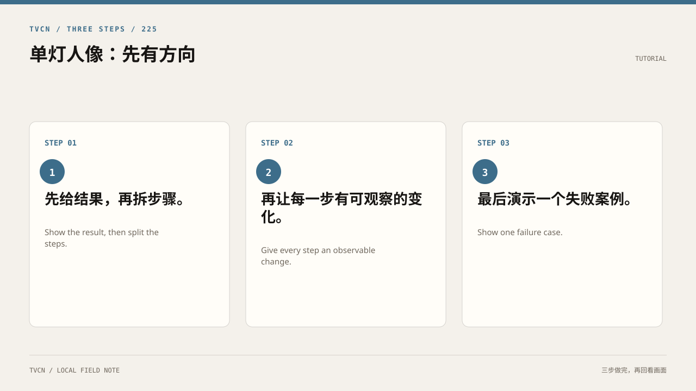

一盏灯先定方向，再用反光补
只有一盏灯时，先决定它从哪来：侧后方做轮廓，侧前方做脸，顶光做压迫。方向定错，加十盏灯也救不回来。补光用白墙、泡沫板或反光板，不要再加第二盏同方向的灯。
拍一条，看鼻子和下巴的阴影；阴影形状决定观众读到的情绪。
边界
单灯不是“平”。可以用黑旗压暗另一侧，让反差更大；不要为了省事把灯怼到正面，脸会变平。
单灯人像：先有方向，再有亮度
一盏灯也能有层次，关键是方向和距离。灯放在主体侧前方 45°，距离 1–1.5 米；另一侧用白墙或反光板补一点，比例控制在 2:1。
- 先关掉所有环境光，只开主灯；看鼻子和下巴的阴影是否朝同一方向。
- 灯越高，眼窝越深；不要高过发际线，否则会出现“鬼影”。
- 需要柔光就加柔光箱或白布，尺寸越接近人脸越柔；不要直接裸灯打脸。
验收：看暗部是否还有皮肤纹理；一片死黑说明补光不够，一片平说明主灯太正。两者之间才有形状。
DIAGRAM / Tutorial
三步流程

现场
灯放 45 度，距人脸 1 米；先拍一张看鼻子影子，再决定柔光箱大小。
怎么做
- 灯放 45 度，距人脸 1 米。
- 先拍一张看鼻子影子。
- 再决定柔光箱大小。
别踩
别先换柔光箱；方向没定，换多大的箱子都只是换一种错。
图片说明：本页封面、图解与步骤图是编辑示意或结构图，不是本页实测照片，也不能当作器材测试证据；AI 辅助生成的图会在图注标出。判断器材或画面，以正文的测试条件与现场记录为准。